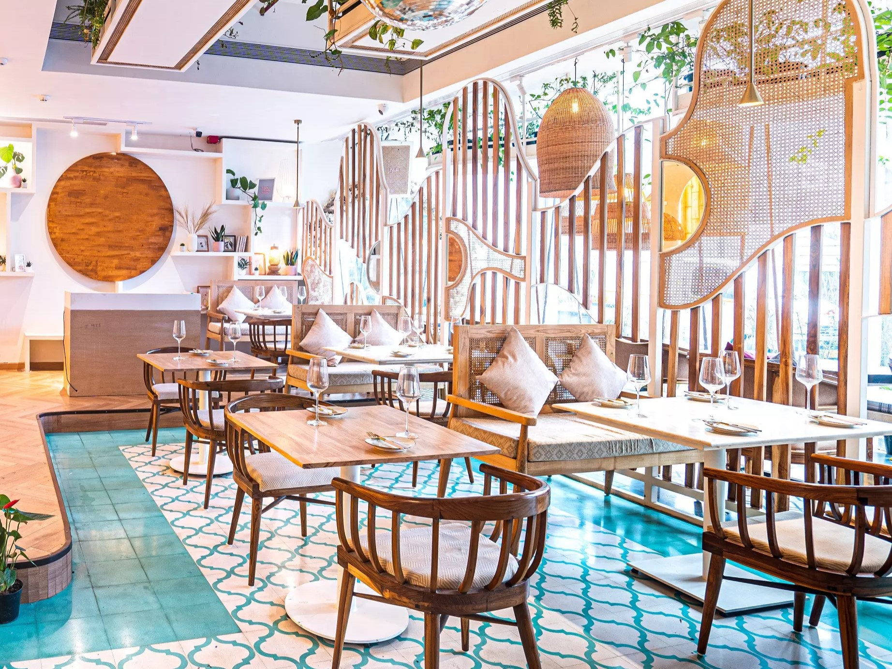
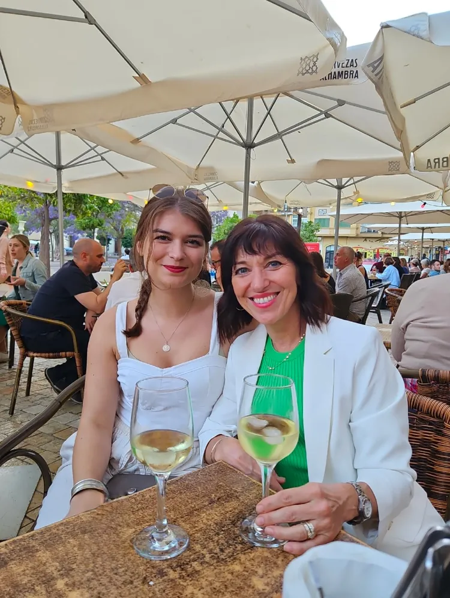
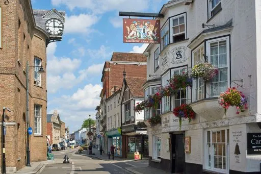
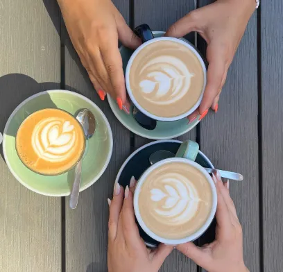
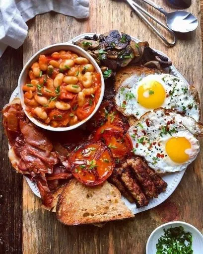
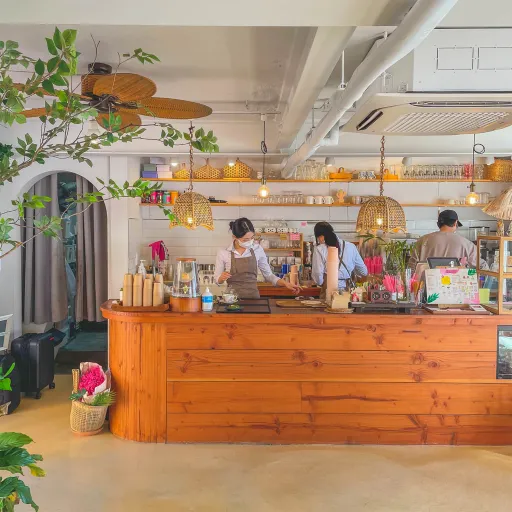
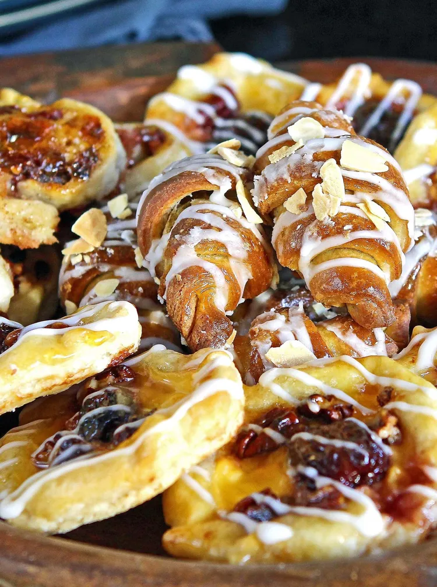
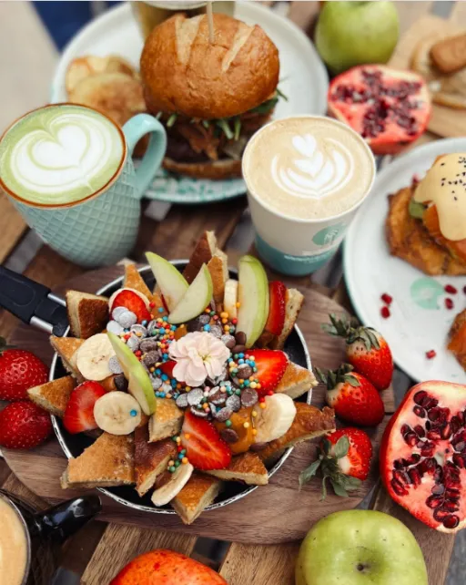
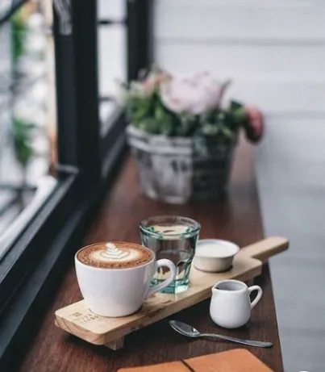
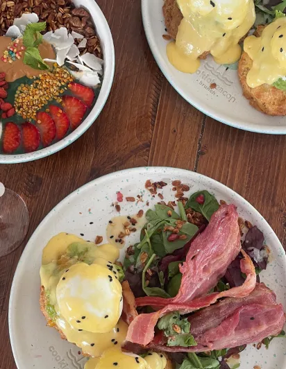

Bringing those holiday breakfast vibes to you!
Meet Us
We are Linda & Megan, Mum & Daughter and two Hertford locals and big foodies! We love all things breakfast and brunch and are BIG fans of a holiday!
Together we have created a menu to cover all the essentials, whether you're in the mood for sweet, savoury or have just started a health kick
We got you covered!


Opening Times
| Mon - Tue | Closed |
|---|---|
| Wed - Sun | 08.30 - 16.30 |
Gallery






